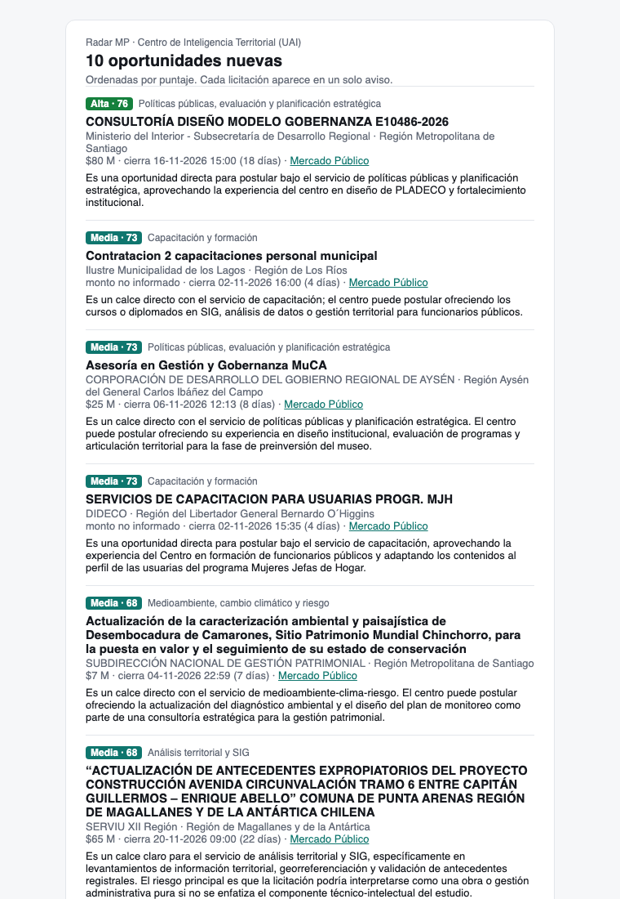

12 Usuarios
Dentro de cada unidad hay personas que revisan oportunidades y deciden si postular. Este capítulo explica cómo les llega la información y cómo su criterio vuelve a la plataforma.
12.1 Dos formas de recibir oportunidades
- El correo diario llega sin que la persona lo pida. Sirve para enterarse.
- La bandeja web se consulta cuando se quiere. Sirve para revisar con calma, filtrar y etiquetar (Bandeja).
12.2 El correo diario
Después del matching, la plataforma arma un correo con las oportunidades nuevas del día. Para cada una muestra prioridad, servicio, puntaje, comprador, monto, fecha de cierre y el resumen escrito por el juez, con enlaces a la bandeja y a la ficha en Mercado Público (Figura 12.1).

Tres reglas evitan que el correo se vuelva ruido:
- Solo incluye las prioridades elegidas (por defecto, alta y media).
- Solo incluye licitaciones abiertas.
- Cada licitación se avisa una sola vez: la tabla
alertregistra lo ya enviado.
El 27 de octubre, el correo del CIT habría incluido la consultoría de la Subdere con su resumen: «Es una oportunidad directa para postular bajo el servicio de políticas públicas y planificación estratégica…».
12.2.1 Cómo se envía
El correo puede ir de dos formas:
- Personal: cada persona marcada para el correo diario recibe el suyo, sin las licitaciones que ya recibió. Se coordina en Operación → Correos a usuarios, con vista previa por persona e historial de envíos.
- Lista fija: un mismo correo para una lista de direcciones, configurada en Configuración → Alertas por email.
Si la plataforma tiene un canal de envío configurado (SMTP_* en .env, o una API de correo por HTTPS con MAIL_PROVIDER), el correo llega a las casillas. Si no, se guarda como archivo .eml en el servidor, para revisarlo antes de activar el envío real; ese correo no cuenta como recibido.
uv run radar digest --preview digest.html # vista previa en un archivo12.2.2 Qué se configura
Por unidad: si el correo sale solo con la rutina diaria, si va a las personas marcadas o a la lista fija, qué prioridades se avisan y si solo se incluyen las abiertas. Los días y la hora de la rutina se eligen en Operación → Programación automática.
12.3 El ciclo de retroalimentación
En el detalle de cada licitación hay cuatro botones, que también se activan con una tecla:
| Botón | Tecla | Qué se guarda | Significa |
|---|---|---|---|
| 👍 Relevante | 1 |
relevante |
Sirve a la unidad |
| 👎 No relevante | 2 |
no_relevante |
No sirve |
| ? Dudoso | 3 |
dudoso |
No está claro; requiere conversar |
| ✈ Postular | p |
relevante + postulado |
Sirve y la unidad decidió preparar una oferta |
Los botones aparecen para las personas con rol analista o superior (Usuarios). Repetir el mismo botón quita la etiqueta. Cada licitación tiene una sola etiqueta vigente por unidad: si otra persona marca otra cosa, la última gana. Todas las marcas quedan además en el historial de la persona que las puso, con la hora.
12.3.1 ¿Qué pasa cuando alguien hace clic en 👍?
Lo primero que hay que saber es lo que no pasa: el clic no cambia el puntaje de esa licitación, no la vuelve a juzgar y no reentrena ningún modelo. La licitación sigue en el mismo lugar de la bandeja. Lo único inmediato es que la etiqueta queda guardada y se puede filtrar («Etiqueta: Relevantes»).
La etiqueta sirve después, de tres formas:
1. Como caso de referencia para el juez (desde el día siguiente). Cuando el juez evalúa una licitación nueva, la plataforma busca entre las ya etiquetadas las que más se le parecen —coseno entre licitaciones de al menos 0,55, con los mismos embeddings de la búsqueda por significado— y le muestra hasta cuatro, mitad relevantes y mitad no. Por ejemplo, si el equipo marca 👍 en Actualización plan regulador comuna de Hijuelas (3775-35-LP26), una licitación como Actualización PLADECO comuna de Natales, que se le parece con coseno 0,57, llegaría al juez con esta línea extra en sus instrucciones:
Casos parecidos ya evaluados (referencia del criterio del equipo;
juzga esta licitación por su propio contenido):
- "ACTUALIZACIÓN PLAN REGULADOR COMUNA DE HIJUELAS" → RELEVANTEUn 👎 funciona igual, pero como ejemplo de lo que no sirve. Así el criterio del equipo entra en las decisiones sin reentrenar nada, y en el detalle de la licitación nueva se ven los casos que consultó el juez. Solo afecta a lo que se juzgue de ahí en adelante; para aplicarlo a días pasados hay que reprocesarlos con --rejudge.
2. Para calibrar los umbrales (cuando hay suficientes). Con al menos diez licitaciones marcadas 👍 y diez 👎, Configuración → Aprendizaje compara las etiquetas con el puntaje final y sugiere los umbrales de prioridad: el de media que mejor equilibra precisión y recall, y el de alta que asegura al menos 80 % de precisión. También muestra en qué paso quedaron las licitaciones que el equipo marcó relevantes y el sistema no priorizó (reglas, triaje, juez). La sugerencia no se aplica sola: alguien tiene que presionar Usar sugerencia (Modelos de priorización).
3. Para medir si la plataforma acierta. Las etiquetas son la respuesta correcta contra la que se calculan la precisión y el recall del sistema, y en Usuarios se ve cuántas etiquetas puso cada persona.
| Etiqueta | Caso para el juez | Calibración | Métricas |
|---|---|---|---|
| 👍 Relevante | positivo | positivo | positivo |
| ✈ Postular | positivo | positivo | positivo (además queda marcada como postulada) |
| 👎 No relevante | negativo | negativo | negativo |
| ? Dudoso | no se usa | no se usa | no se usa |
«Dudoso» sirve para organizar el trabajo del equipo, pero no enseña nada a la plataforma; conviene resolverlo después a 👍 o 👎.
12.3.2 Qué etiquetar para que sirva
- Etiquetar también lo que no sirve. Un 👎 en una licitación con prioridad alta es la señal más útil: muestra un error del sistema. Si solo se marcan las buenas, la calibración no tiene con qué comparar.
- Revisar de vez en cuando las otras vistas. Las etiquetas de la bandeja se concentran en puntajes altos. Una oportunidad marcada 👍 en «Descartadas por el juez» o «Excluidas por filtro» muestra qué se está perdiendo.
- Usar «Postular» cuando corresponda. Hoy cuenta igual que 👍, pero deja registrado qué se decidió postular, la base para aprender de las postulaciones.
- Comentar el porqué cuando sea posible. El juez también ve el comentario de cada caso («no: es venta de equipos»). Hoy la bandeja no tiene un campo para escribirlo; los comentarios entran por la planilla de etiquetado (
radar eval).
Una persona que etiqueta diez licitaciones a la semana mejora la bandeja de todo su equipo.
- Marcar a las personas del CIT para el correo diario y activar el envío automático. El canal SMTP ya funciona: los primeros correos llegaron el 30 de octubre. pendiente
- Comenzar a etiquetar: hoy no hay etiquetas del equipo, así que el juez todavía no recibe casos de referencia y la calibración no tiene datos. pendiente
- Agregar un campo de comentario en la bandeja. pendiente
- Preferencias personales (servicios, regiones, frecuencia) y resúmenes semanales son parte de Trabajos futuros.
- Las personas reciben un correo diario sin repeticiones y revisan la bandeja cuando quieren.
- Un 👍 o 👎 no cambia nada al instante: enseña al juez desde el día siguiente, calibra los umbrales y mide los aciertos.
- La parte siguiente, Plataforma, muestra la web en detalle.